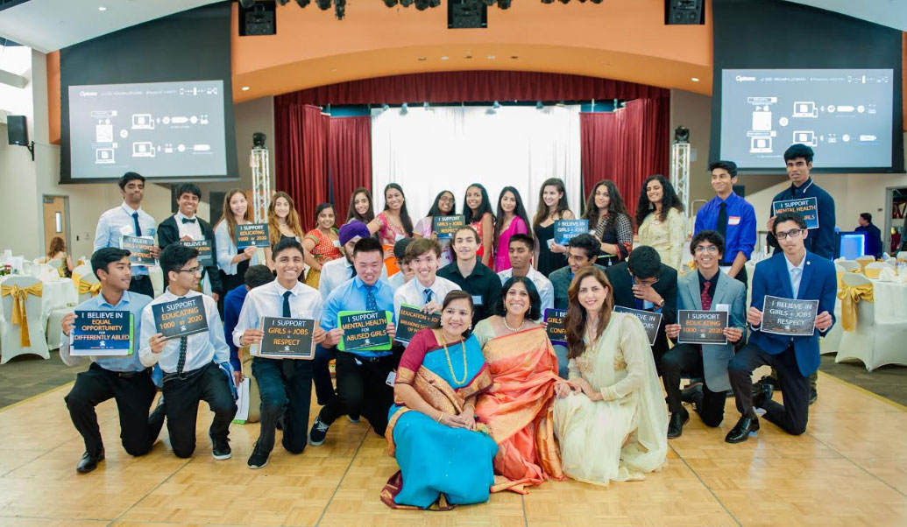

The Youth Chapters assist HOH Inc in leading the annual HOH Gala, where representatives from each youth chapter collect funds from donors. Distinguished members of each Youth Chapter are also recognized tonight, making the night all the more magical. At the 2019 Gala, there were 350 attendees and $180,000 was raised.
